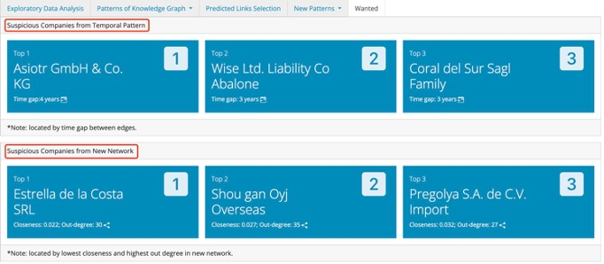

Shiny APP User Guide
Find or Be Blind: Fraud Fishing Detection for Fisheye
1. Exploratory Data Analysis (EDA)
1.1 Distribution of Edges by HSCode
Top 10 hscode with the greatest number of edges shown in this plot. User can select the years within range of [2028, 2034], default selection is the distribution of all year together. Since hscode “306170” contains most edges, our analysis on knowledge graph would mainly focus on this hscode.

1.2 Distribution of Edges by Year
This plot shows the distribution of edges of “306170” by year in range of [2028, 2034].

1.3 Distribution of Edges by Month
This plot shows the distribution of edges of “306170” by month and user can select the years in range of [2028, 2034], default selection is 2028.

1.4 Number of Source and Target by Year
This plot shows the number of source/target nodes of “306170” by year in range of [2028, 2034].

2. Patterns of Knowledge Graph
2.1 Temporal Pattern Heatmap
In this heatmap, users can identify companies exhibiting irregular temporal patterns, characterized by interruptions of out-shipment records lasting three years or longer.
Under the “Select record type” option, users can specify the type of count displayed on the heatmap:
[Total shipment count]: Shows the total weight count of shipments sent by each company.
[Out degree count]: Indicates the number of unique companies to which each company sends out shipments.
By comparing the total shipments to the outgoings, users can gain greater insight into potential reasons for disruptions in shipment records and understand the business relationships of each company. Some companies may show a sudden decrease in the number of companies sending goods, or some companies have been sending goods to only few companies.

2.2 Network Graph
In this graph, users can set maximum weight to filter the network by step of 10 within range of [1,600]. Companies’ out-degree rank within top 20% would have their names shown on the graph.
Nodes with only out-directed edges grouped as “fisher”;
Nodes with only in-directed edges grouped as “wholesaler”;
Nodes with both in/out-directed edges grouped as “transport”;
Nodes size along with nodes’ out-degree;
Edge width along with weights.

3. Predicted Links Selection
3.1 Nodes of All Bundles
This is a facet nodes graph of all predicted bundles provided by Fisheye. And from this, we selected the 7 bundles with more nodes considering those can contribute more to the knowledge network.

3.2 Selected Links
This is the network graph of those 7 selected bundles. User can choose each bundle to gather a closer look at the network of each bundle, default selection is network of all selected bundles combined. Companies’ out-degree rank within top 20% would have their names shown on the graph.
Same definition of nodes’ group, size and edge width used as knowledge network graph.

4. New Pattern
4.1 Temporal Pattern
The line plot shows the temporal pattern after adding new selected bundles.
Users have the option to choose and compare different types of temporal patterns, including:
[Fluctuated]: This type compares the three companies with the most variable total out shipment counts from 2028 to 2034, ranging from 0 to 300.
[Stable]: By selecting this type, users can compare normal companies with similar shipment counts around 300. This reveals a consistent and continuous pattern in the out shipments without significant fluctuations.

4.2 Network Graph
In this graph, network of hscode (“106414”) with most change after combined with selected bundles. Users can select type of network (original network or new combined network), and can also set maximum weight to filter the network by step of 10 within range of [1,800]. Companies’ out-degree rank within top 20% would have their names shown on the graph.
Same definition of nodes’ group, size and edge width used as knowledge network graph.

5. Wanted
This page lists out top 3 suspicious companies we found from temporal pattern and network after combined with predicted links.
The identification of suspicious companies from temporal pattern is based on two criteria: interruptions in their shipment records and significant fluctuations observed throughout the analyzed period. These patterns differentiate them from other companies that have continuous records and similar shipment counts.
The identification of suspicious companies from network located is based on lowest closeness and highest out degree, and we think those nodes are relatively far from the center of network but gather a little group around it.
